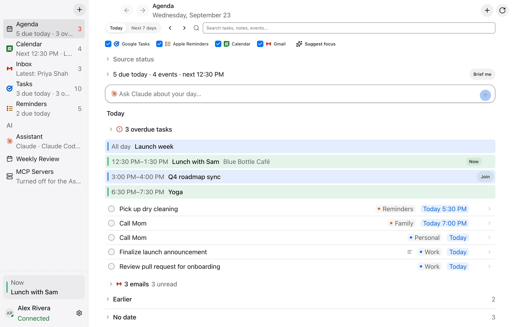
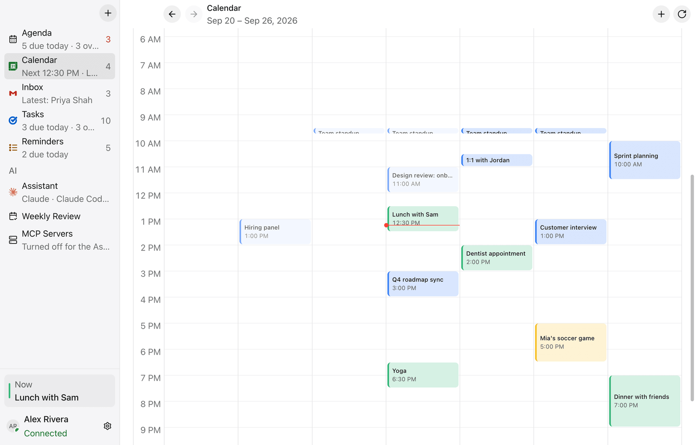
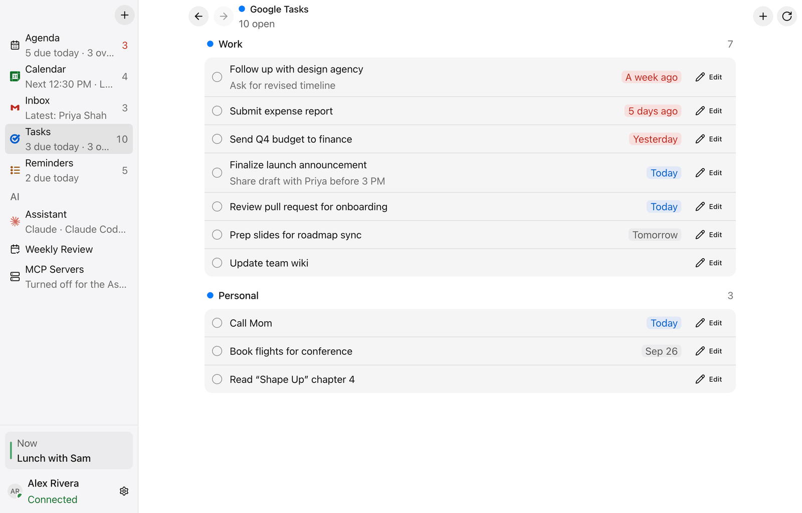
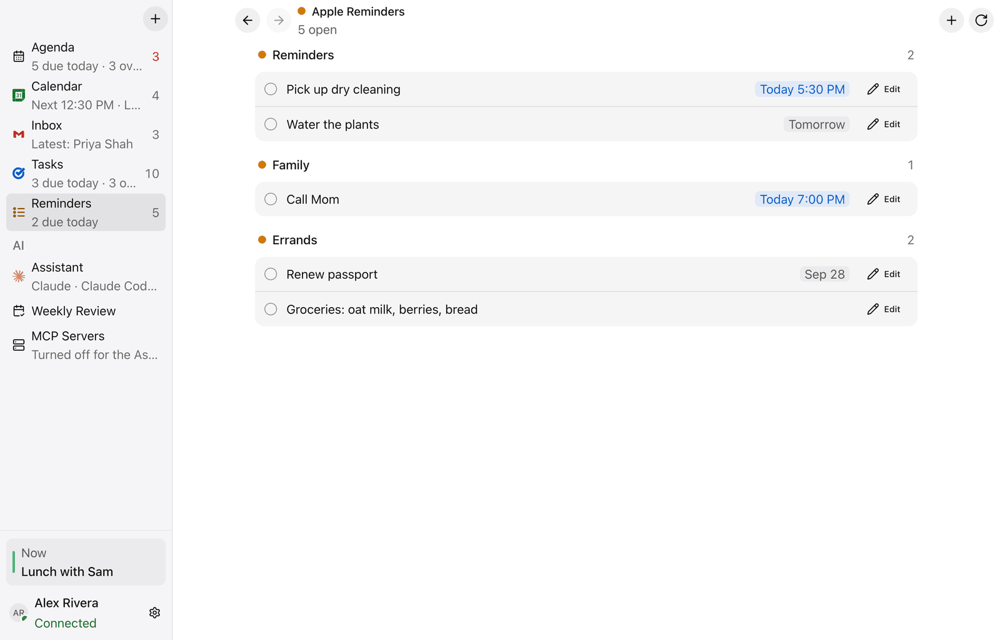
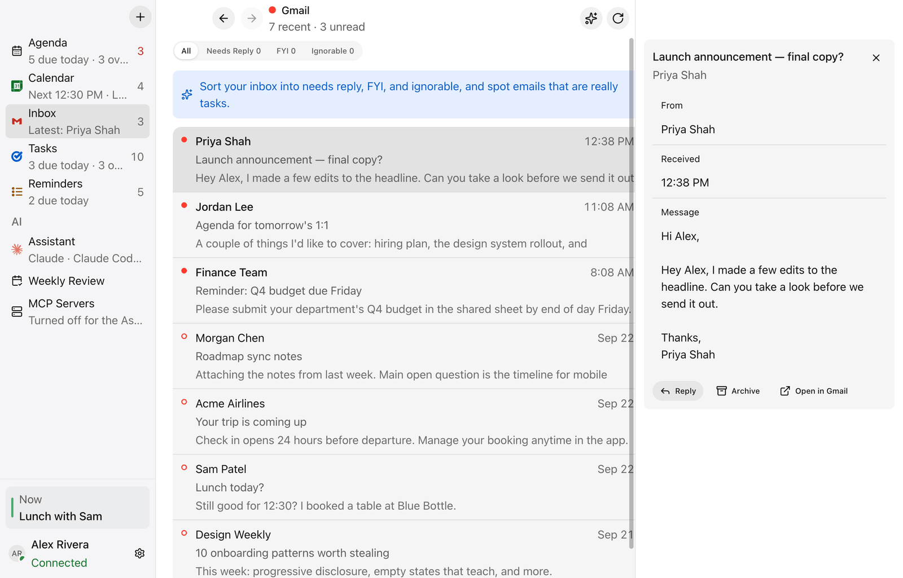
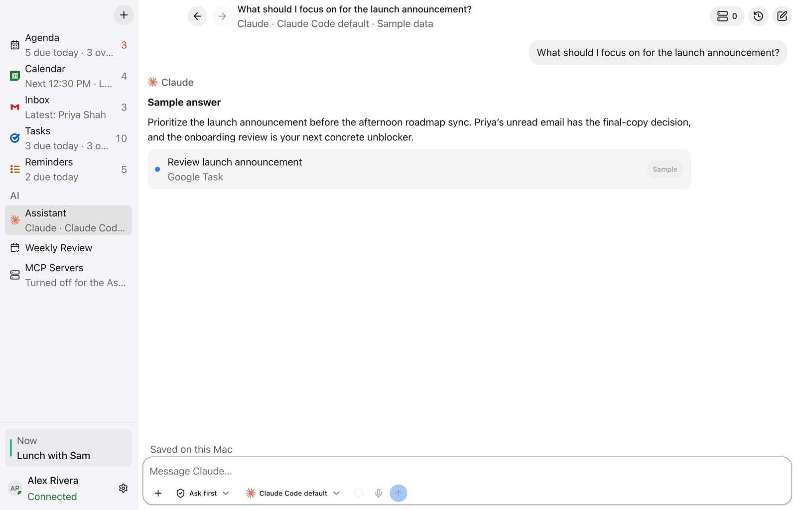

Your whole day, on one board.
DayBoard brings Google Calendar, Google Tasks, Apple Reminders and Gmail together in one calm Mac app — with an optional AI assistant that already knows your schedule.
Works with Google Calendar Google Tasks Apple Reminders Gmail

Stop opening four apps to plan one day.
DayBoard gathers what's scheduled, due and waiting from the services you already use, then lays it out as a single agenda in time order.
Google Calendar
9:30 · Team standup
3:00 · Q4 roadmap sync
Google Tasks
Finalize launch announcement
Review pull request
Apple Reminders
Pick up dry cleaning
Call Mom
Gmail
Priya: final copy?
Jordan: 1:1 agenda
Today
- 9:30 AMTeam standup
- TodayFinalize launch announcement
- 3:00 PMQ4 roadmap sync
- 5:30 PMPick up dry cleaning
- 7:00 PMCall Mom
- UnreadPriya: final copy?
A calendar that also shows what's due.
Month, week and schedule views put your events, tasks and reminders on the same grid, so a crowded Thursday looks crowded before you get there.
- Month, week and schedule layouts
- Tasks and reminders on their due dates
- Open any item in a pop-up, inline, or a side panel

Tasks and Reminders, finally together.
Keep work in Google Tasks and errands in Apple Reminders, and see both in one list. Found the same to-do in both? Link them, and checking off one completes the other.
- Edit titles, notes and due dates without leaving DayBoard
- Linked duplicates show up once in your Agenda
- Every change syncs back to Google and Apple


Mail that sits next to your plans.
Your recent Gmail is one click from your agenda. Open a message beside the list, and if you turn on AI, let it sort what actually needs a reply.
- Recent Gmail with unread messages at a glance
- Optional AI sorting: Needs reply, FYI and Ignorable
- Reply drafts saved straight to Gmail

An assistant that knows your day.
Ask what to focus on, prep for a meeting, or turn a sentence into a task. Use the Claude or ChatGPT account you already have through Claude Code or Codex, or bring your own API key.
- Off until you choose a provider
- Suggested changes wait for your confirmation
- A built-in MCP server lets your own AI tools read your day (off by default)

Your day stays between you and your Mac.
There's no DayBoard server that sees your calendar, tasks, reminders or mail.
Stored on your Mac
Settings, linked items and Assistant history are saved locally. Sign-in tokens are encrypted with macOS's built-in protection.
Straight to the source
DayBoard talks directly to Google's APIs, and to Apple Reminders through macOS. Nothing passes through a service of ours.
AI on your terms
AI stays off until you pick a provider. When you use it, only the context that request needs goes to that provider. Read the data guide
Free during the beta. Open source for good.
Try everything, free
Beta testers get every feature at no cost. When DayBoard launches, a signed official build will be a paid download that funds its development.
Read the code, or build it
DayBoard's source is on GitHub under GPL-3.0. See exactly how it handles your data, or build it yourself.
Is the beta free?
Yes. Beta testers get every feature at no cost. The official build will be a paid download after launch, and the source stays open under GPL-3.0.
Which Macs does it run on?
Macs with Apple silicon (M1 or later) running macOS 14 Sonoma or later. Intel Macs aren't supported yet.
How do I get the beta?
Join the list with your email. If you'll connect Google, use that Google account's address. When your invite is ready, you'll get a link to download the DayBoard installer.
Why does macOS ask before opening it?
Beta builds aren't notarized by Apple yet, so the first launch needs one extra step: open System Settings → Privacy & Security and choose Open Anyway. The beta guide walks you through it.
Why isn't it on the Mac App Store?
DayBoard can use the Claude Code and Codex apps already on your Mac for its AI features, which apps from the App Store aren't allowed to do. Downloading it directly keeps those features.
Do I need all four services?
No. Turn on only the sources you use. Google services need a Google sign-in, and Apple Reminders asks for macOS permission.
Do I have to use AI?
No. Every AI feature is optional and stays off until you choose a provider.
Can I build it myself?
Yes. The source is on GitHub under GPL-3.0, with build instructions in the README.
Get your day on the board.
Join the beta and be one of the first to try DayBoard on your Mac.